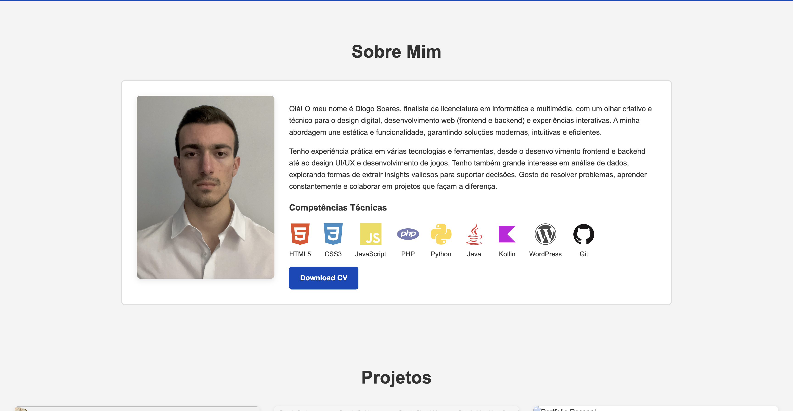

Header
- Contém a barra de navegação com o meu nome e links para as secções principais.
- Possui um botão de menu `hamburguer` para ecrãs mais pequenos, que é responsável por mostrar ou esconder os links de navegação.
- O cabeçalho é responsivo.

Sobre Mim
- Apresenta uma biografia minha, destacando a minha formação e abordagem criativa e técnica.
- Exibe as minhas competências técnicas com ícones para HTML5, CSS3, JavaScript, PHP, Python, Java, Kotlin, WordPress e Git.
- Inclui um botão para descarregar o currículo em PDF.
Projetos
- Esta secção carrega dinamicamente os projetos a partir de um array JavaScript.
- Cada projeto é exibido num cartão com a sua imagem, nome, descrição, tecnologias e um link para a página de detalhes.
- Os cartões de projeto têm um efeito de `hover` que os amplia.

Página específica de projeto
- Fornece informações detalhadas sobre um único projeto, com título, descrição e tecnologias utilizadas.
- O conteúdo principal consiste em blocos de texto e imagem que alternam a posição (esquerda/direita).
- As páginas de projeto usam animações de entrada que deslizam o conteúdo.
Experiências
- Gera dinamicamente uma lista de experiências a partir de um array JavaScript.
- Cada experiência é apresentada num cartão com nome, tipo, período, local e descrição.
- Os cartões de experiência também têm um efeito de `hover` que os amplia.
Contactos
- Inclui uma mensagem de boas-vindas e um formulário de contacto.
- O formulário envia as mensagens usando EmailJS e apresenta uma mensagem de confirmação ou erro.
Footer
- Contém o aviso de direitos de autor: `© 2025 Diogo Soares`.
- Inclui links para os perfis de Instagram, LinkedIn e GitHub.